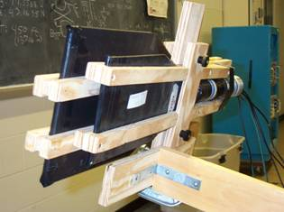
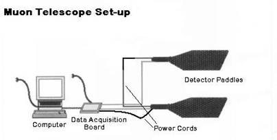

How
the muon detectors work
As
cosmic rays hit the upper atmosphere, they interact with nuclei
in the atmosphere. Muons, which are one of the decay products
of that interaction, travel through the atmosphere to the
surface of the earth at close to the speed of light.
The muon detector paddles have several components: first,
a scintillating plastic that emits light when exposed to high-energy
particles (muons, photons, electrons, etc.); next, a plastic
light guide to direct the light from the scintillator to the
photomultiplier tube (PMT); then a PMT where a photon initiates
a reaction that produces about 100,000 electrons, thereby
creating an amplified electrical signal; and finally, a base
which supplies the PMT with power. This apparatus is covered
with two layers of thick paper, white on the inside to reflect
light back into the paddle and black on the outside to prevent
any visible light photons from entering the system.
When a high-energy particle contacts the scintillator, a
signal is generated that will travel from the base, through
an interface board, to the computer that displays your results.
When doing experiments, you will always use at least two paddles,
because a single paddle will sometimes give off signals for
things that aren’t muons. You are looking for a coincidence,
which occurs when there is a signal from two or more paddles
within a few hundred nanoseconds. This is such a short time
because the particles are traveling at high speeds. A coincidence
almost always represents a muon that has traveled a path intersecting
both paddles.
Detailed
explanation of how the detectors work
|
How to assemble your detector set-up

1) Plug in the power supplies to the computer and the data acquisition board
2) Connect one end of the serial cable to the port on the computer and the other to the data acquisition board
3) Now turn on the computer (serial cable must be connected before booting!)
4) Connect green signal cables from each paddle to the front of the DAQ
5) Connect a power cable from the DAQ to a paddle, then use two more cables to "daisy chain" the power from the first paddle to the second and from the second paddles to the third.
6) Verify that the bases of the paddles are set at the correct voltage and then turn them on!
Detailed
detector assembly instructions (with pictures!) |
Advanced
Detector Operation Instructions
Instructions
for optimizing the operating voltage The paddles have been individually tested before being packaged in a set-up and loaned to teachers. They have each been labeled with the voltage at which they best perform. Should the singles rates differ significantly from the singles rate on the label, check for light leaks and verify that the voltage dial has not been unlocked. Then, you may want to follow this step-by-step procedure for determining the best voltage to set each photomultiplier tube. You may also call the PARTICLE Fellow.
Instructions
for checking the counting efficiency The paddles sent out to teachers run at >95% efficiency. This is a step-by-step procedure for checking the efficiency of a single "test" paddle with three "good" paddles. The efficiency test is a comparison of the count rate of muons passing through all four paddles and the count rate of muons passing through all three "good" paddles but not the test paddle. A diagram of the proper configuration of the paddles is included.
Instructions for the electronics (pdf) This document explains how to connect power, connect the serial cable, connect the signal cables from the counters, use the SimpleDaq program, and adjust thresholds. It also includes a note about grounding.
|